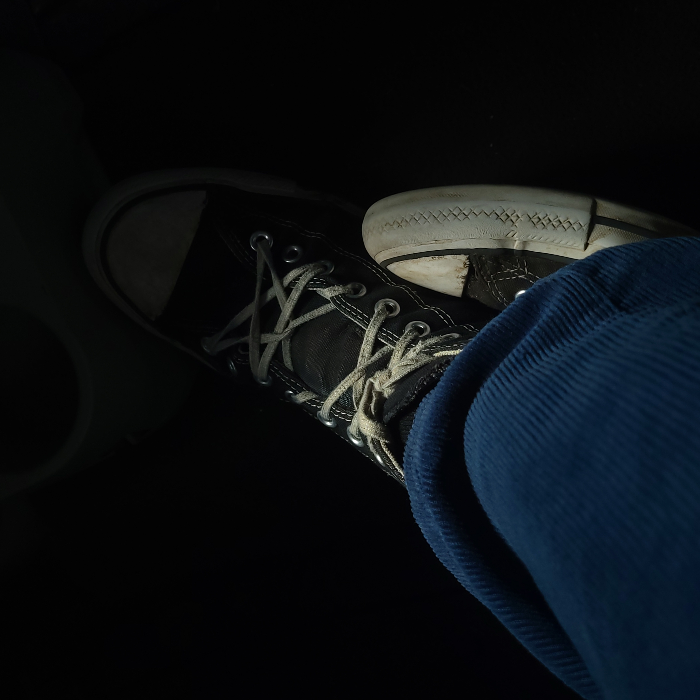

Sunset photo with no editing, this is the raw image my camera saw!

Sunset photo with no editing, this is the raw image my camera saw!
A cinematic kinda photo I got of my freind's shoes. I know, weird... but I think it looks pretty cool!
This is a long exposure photograph that I captured using the pro mode on my Samsung Galaxy S21. I don't remeber what I pointed the camera at, but really just set the shutter speed and iso suuuper low, point the camera at any bright lights, click the shutter button, then shake the camera round.